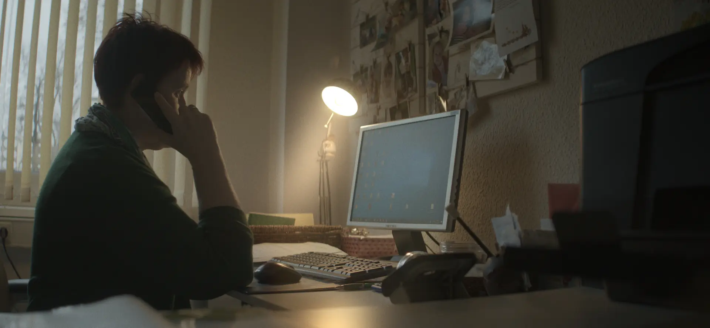

Blackscreen — Hero-Animation
Entschieden am 11.08.2026: Variante 01. Sie ist im Hero der Startseite eingebaut, mit gestreckten Phasen (2.300 → 3.400 ms, jede Phase länger). Diese Seite bleibt als Herleitung stehen — Variante 01 hier läuft in derselben Länge wie im Hero.
Alle drei laufen auf demselben Hero, denselben Tokens und derselben Type-Skala wie der
PoC. Jede lässt sich beliebig oft neu auslösen. Unter
prefers-reduced-motion zeigen alle drei sofort den Endzustand.
Zum Vergleich, was der Effekt von fluid-ink-reveal kostet, auf den du gezeigt hast: 106.678 Bytes JavaScript plus ein dauerhaft laufender WebGL2-Kontext mit Ping-Pong-Framebuffern. Die drei hier liegen zwischen 0 und 1.200 Bytes.
Das Standbild stammt aus Visionfilm / Stiftung Kinderseele — dem
einzigen Altprojekt, das Robert behalten will. Es zeigt eine erkennbare Person:
vor einer Live-Nutzung Rechte und Freigabe klären
(rechteGeprueft, kundeNennenErlaubt).
Variante 01
Die Seite öffnet mit genau dem, was jedes Imagefilm-Portfolio zeigt: ein schönes Filmbild, vollflächig. Dann wird es weggenommen — überall außer in den Buchstaben. Was bleibt, ist Papier und ein Satz, in dem der Film noch steckt; auch der löst sich zuletzt in reines Schwarz auf. Die Animation führt die These vor, statt sie zu dekorieren.

(01)Die These
Kommunikationsstrategien müssen genau da ansetzen: lange echte Inhalte für die Identifikation.
Variante 02
Kein Bild, kein Überblenden. Die Schrift schneidet sich ins Bild —
sieben harte Zustände mit steps(1), dazu ein Bildstands-Zittern von
wenigen Pixeln, das sich einpendelt. Das ist der Moment, in dem ein Projektor
anläuft und das Bild einrastet. Nüchtern, filmisch, null Bytes
JavaScript und kein einziges Pixel Bildmaterial.
(01)Die These
Kommunikationsstrategien müssen genau da ansetzen: lange echte Inhalte für die Identifikation.
Variante 03
Am nächsten an dem, worauf du gezeigt hast — aber ohne Fluid-Simulation. Die Buchstaben laufen als Tuschekleckse an und ziehen sich in ihre Form zusammen: eine SVG-Turbulenz verschiebt die Schrift, ihre Stärke fährt von 130 auf 0. Der Look der Tinte als einmaliger Auftritt statt als dauerhaft mitlaufende Physik.
(01)Die These
Kommunikationsstrategien müssen genau da ansetzen: lange echte Inhalte für die Identifikation.